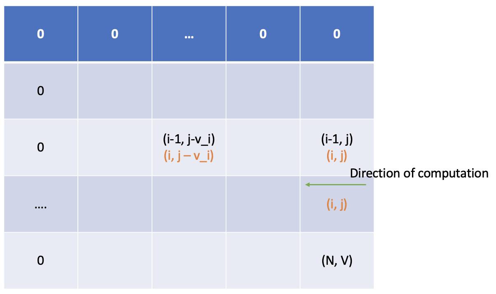

01 Knapsack
有 N 件物品和一个容量是 V 的背包。每件物品只能使用一次。
第 i 件物品的体积是 vi，价值是 wi。
求解将哪些物品装入背包，可使这些物品的总体积不超过背包容量，且总价值最大。输出最大价值。
To solve this problem using Dynamic Programming, there are a few things we need to clarify before we dive deep:
- Range(范围)
- Restriction(限制)
- Target(目标)
Here we first define a two-dimension array \(f[i][j]\), where \(i\) means we can randomly pick any elements from goods indexed from 0 to \(i\). \(j\) means the maximum volume of the knapsack. \(f[i][j]\) means the maximum weight value given the Range condition \(i\) and Restriction condition \(j\), so \(f[i][j]\) is our Target of which the type is maximum.
We know that the final goal of thinking in Dynamic Programming is to write the State Transition Function. Since we have already defined our Target \(f[i][j]\), we want to explore the connection between \(i\) and \(i - 1\) in Range condition.
According to the question, we can either pick or disregard the \(i^{th}\) good and that is exactly why we classify this kind of knapsack problem as 01-knapsack.
if we take \(f[i][j]\) as one set and the set can be split into two half by whether we pick \(i^{th}\) good or not.

According the definition of Target, the right half of the set \(f[i][j]\) is \(f[i-1][j]\).
All combinations in the left half have one common feature: they all contains \(i^{th}\) good. So we can further translate the left half as \(f[i-1][j - v_{i}] + w_{i}\). How to understand this state? Well, since we know that for the left half, the knapsack is sure to contains \(i^{th}\) goods, so our goal is to find the maximum weight when the \(i^{th}\) good is eliminated from the knapsack, so the range condition become \(i-1\) and the restriction become \(j - v_{i}\) (we must leave enough room for \(i^{th}\) good). In sum, the set \(f[i][j]\) becomes:
Now we have already deduced the State Transition Function. Now it is time to code. But before we start, we need to check some corner cases:
- i = 0. Under this Range condition, we do not have any goods to pick. so \(f[0][j]\) would be 0.
- j = 0. Under this Restriction condition, the volume of the knapsack is zero, so \(f[i][0]\) would be 0.
- \(j < v_i\), this condition means we cannot pick \(i\), so \(f[i][j] = f[i-1][j]\)
#include <iostream>
using namespace std;
const int N = 1001;
int f[N][N];
int V[N], W[N];
int n, v;
int main(void){
cin >> n >> v;
for (int i = 1; i <= n; i ++){
cin >> V[i] >> W[i];
}
for (int i = 1; i <= n; i ++){
for (int j = 1; j <= v; j ++){
f[i][j] = f[i-1][j];
if (j >= V[i]){
f[i][j] = max(f[i][j], f[i - 1][j - V[i]] + W[i]);
}
}
}
cout << f[n][v] << endl;
return 0;
}
The space complexity is \(O(n^2)\) and time complexity is \(O(n^2)\).
There are space for optimization. When we compute \(f\) on \(i^{th}\) layer, we only need results from \({i-1}^{th}\) layer. So we do not need a two-dimension array to record results for every level.
#include <iostream>
using namespace std;
const int N = 1001;
int f[N];
int V[N], W[N];
int n, v;
int main(void){
cin >> n >> v;
for (int i = 1; i <= n; i ++){
cin >> V[i] >> W[i];
}
for (int i = 1; i <= n; i ++){
for (int j = v; j >= V[i]; j --){
f[j] = max(f[j], f[j - V[i]] + W[i]);
}
}
cout << f[v] << endl;
return 0;
}
Why this would work? When we compute \(f[j]\), we need \(f[j]\) and \(f[j - v_i]\), they have already been computed on the last traversal.

After this optimization, the space complexity becomes \(O(n)\).
Now let’s try one leetcode question:
Given an integer array nums, return true if you can partition the array into two subsets such that the sum of the elements in both subsets is equal or false otherwise.
Example:
Input: nums = [1,5,11,5]
Output: true
Explanation: The array can be partitioned as [1, 5, 5] and [11].
This problem asks us to check the array could be split into two subsets and the sum of elements in both subset is equal.
It can be simplified as if we could find a subset of which the sum is equal to \(0-\frac{SUM}{2}\) where \(SUM\) represents sum of nums.
This is a 01-knapsack problem:
- Range: i from \(0\) to \(n\), where \(n\) is the size of nums
- Restriction: j from \(0\) to \(\frac{SUM}{2}\)
- Target: \(f[i][j]\), and the type is equal
We deduce the final State Transition Function is:
$$f[i][j] = f[i-1][j] \text{ or } f[i-1][j - nums[i]]$$
The final code is:
class Solution {
public:
bool canPartition(vector<int>& nums) {
int total = 0;
for (int i = 0; i < nums.size(); i ++){
total += nums[i];
}
if (total % 2 != 0){
return false;
}
int half_sum = total / 2;
bool f[half_sum + 1];
memset(f, false, (half_sum + 1) * sizeof(bool));
f[0] = true;
for (int i = 1; i <= nums.size(); i ++){
for (int j = half_sum; j >= nums[i - 1]; j --){
f[j] = f[j] || (f[j - nums[i - 1]]);
}
}
return f[half_sum];
}
};
Unbounded Knapsack
有 N 种物品和一个容量是 V 的背包，每种物品都有无限件可用。
第 i 种物品的体积是 vi，价值是 wi。
求解将哪些物品装入背包，可使这些物品的总体积不超过背包容量，且总价值最大。输出最大价值。
Unbounded Knapsack problem removes the restriction that only one copy of //(i^{th}//) good can be included in the knapsack. Again, we list three key points:
- Range: \(i: 0\) to \(N\), it defines the range of goods we could randomly pick from.
- Restriction: \(j: 0\) to \(V\), it defines the volume of the knapsack.
- Target: \(f[i][j]\), target type is maximum
For unbounded knapsack, we should consider how many \(i^{th}\) good we should pick, from \(0\) to \(n\), where \(n * v_i <= j\).
This expression is interesting, what will happen if we initialize \(j\) to \(j - v_i\)?
$$f[i][j - v_i] = max(f[i-1][j-v_i], f[i-1][j-2 \times v_i]) + w_i, …,f[i-1][j - n \times v_i] + n \times w_i)$$
We can see the relation between the two expression shown above:
$$f[i][j] = max(f[i-1][j], f[i][j-v_i] + w_i)$$
Try not to understand the meaning behind this expression. The most important thing is to know how this State Transition Function was derived from the solution to 01 Knapsack.
Here is the code:
#include <iostream>
using namespace std;
const int N = 10001;
int f[N][N];
int n, v;
int V[N], W[N];
int main(void){
cin >> n >> v;
for (int i = 1; i <= n; i++){
cin >> V[i] >> W[i];
}
for (int i = 1; i <= n; i ++){
for (int j = 1; j <= v; j ++){
f[i][j] = f[i-1][j];
if (j >= V[i]){
f[i][j] = max(f[i][j], f[i][j - V[i]] + W[i]);
}
}
}
cout << f[n][v] << endl;
return 0;
}
The space complexity is \(O(n^2)\) and time complexity is \(O(n^2)\).
Still, there are space for optimization:
#include <iostream>
using namespace std;
const int N = 10001;
int f[N];
int n, v;
int V[N], W[N];
int main(void){
cin >> n >> v;
for (int i = 1; i <= n; i++){
cin >> V[i] >> W[i];
}
for (int i = 1; i <= n; i ++){
for (int j = V[i]; j <= v; j ++){
f[j] = max(f[j], f[j - V[i]] + W[i]);
}
}
cout << f[v] << endl;
return 0;
}
After this optimization, the space complexity becomes \(O(n)\).
You could see that for this optimization, the direction of the second traversal is the opposite of that in 01 Knapsack. Why is that?
We should update \(f[j]\) on the upper level for both 01 and Unbounded Knapsack. In 01 Knapsack, since we need to make sure both \(f[j]\) and \(f[j - v_i]\) are the original value from the upper level, we must start from right to left. But for Unbounded Knapsack, \(f[i][j-v_i]\) is on the same level, so we need to start from left to right.
Bounded Knapsack
Bounded Knapsack means there is restriction on how many \(i^{th}\) good we could pick. We could simply expand the Range condition and take this problem as 01 Knapsack. For example, there 1 A and 3 B, so the \(n = 4\).
However, use 01 Knapsack could induce high time complexity. There are serveral tricks to optimize it, such bit Bit Compression and Monotone Queue, something we may cover in the future.